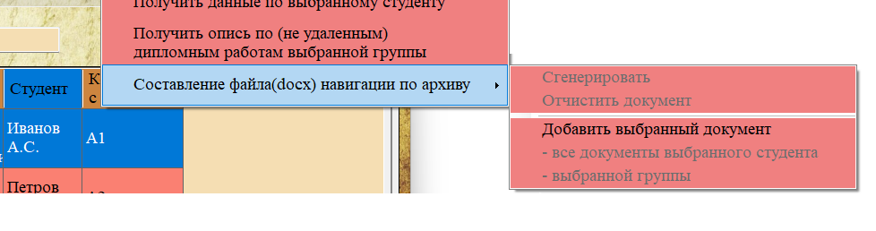
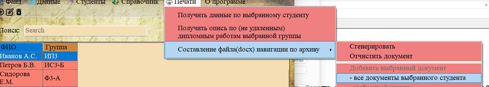
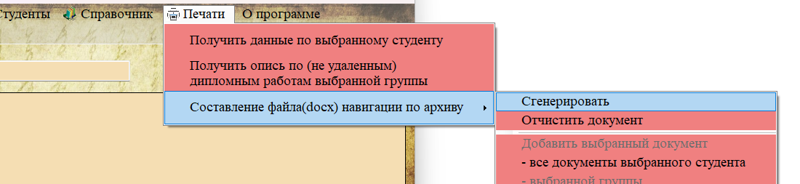

Функция «Создание навигационного файла по архиву» (меню «Печати → Составление файла навигации по архиву») позволяет собрать в одном документе информацию о документах из разных разделов для удобного физического поиска в архиве. Файл указывает номера стеллажей, номера полок, группы и годы — всё, что необходимо для нахождения документа на полке.

Рис. 1. Пункты меню для работы с навигационным файлом
Принцип работы
Навигационный файл формируется поэтапно: сначала вы добавляете в «корзину» нужные элементы из разных разделов, затем генерируете итоговый документ.
Доступные действия в подменю
| Пункт меню | Описание |
|---|---|
| Сгенерировать | Создать итоговый документ Word на основе добавленных элементов |
| Отчистить документ | Очистить список добавленных элементов (начать сбор заново) |
| Добавить выбранный документ | Добавить в навигационный файл информацию о выбранном документе (из разделов 2.2.4 или 2.2.5) |
| - все документы выбранного студента | Добавить все документы выбранного студента (из раздела 2.2.1) |
| - выбранной группы | Добавить все документы выбранной группы (из раздела 2.3.1) |
Добавление элементов

Рис. 2. Добавление выбранного документа в навигационный файл
Добавление документа:
1. Перейдите в раздел «Документы работ» или «Удалённые документы».
2. Выделите нужный документ в таблице.
3. В меню «Печати → Составление файла навигации» выберите «Добавить выбранный документ».

Рис. 3. Добавление всех документов выбранного студента
Добавление всех документов студента:
1. Перейдите в раздел «Студенты».
2. Выделите нужного студента.
3. В меню выберите «- все документы выбранного студента».
4. В навигационный файл будут включены все документы этого студента (как обычные, так и удалённые).
Рис. 4. Добавление всех документов выбранной группы
Добавление всех документов группы:
1. Перейдите в раздел «Группы».
2. Выделите нужную группу.
3. В меню выберите «- выбранной группы».
Генерация итогового документа

Рис. 5. Кнопка «Сгенерировать» для создания итогового документа
После добавления всех необходимых элементов:
1. Выберите пункт «Сгенерировать».
2. В диалоговом окне выберите место сохранения файла (по умолчанию предлагается имя «Файл_навигации_по_архиву.docx»).
3. Программа создаст документ Word со следующей структурой.

Рис. 6. Пример сформированного навигационного файла
Структура навигационного файла
Документ содержит заголовок «НАВИГАЦИЯ ПО АРХИВУ» и перечисление всех добавленных элементов. Для каждого документа выводится:
— Для документа: тема документа, тип, студент, стеллаж, полка, название коробки, дата сохранения.